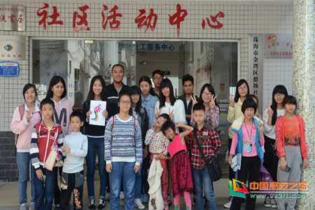

吉林大学珠海学院青年志愿者协会国际贸易与金融系分会关爱农民工子女
桂电志愿者网 日期：2015-04-17 来源：
天会晴，心会暖，阳光在手指间。吉林大学珠海学院青年志愿者协会国际贸易与金融系分会于2014年11月15日上午开展了“阳光支教”活动。志愿者们一同来到三灶和鱼林社区，帮助小朋友们解决学习上的困难，和他们开心地玩耍。

上午九点，由国际贸易与金融系青协支教负责组长组织并带领志愿者们前往支教地点。过了十几分钟，志愿者们便来到了各自的支教地点。在鱼林社区，志愿者们一下车，小朋友们便一起拥上来拥抱志愿者们，顿时志愿者们的内心便充满了温暖。这次志愿者们带来了许多的折纸，教小朋友们折纸花，小朋友们都学得很认真。志愿者们还收到了来自小朋友们满满爱意的纸花。
三灶社区的小朋友们也是早早的就来到了社区活动中心，等着志愿者们的到来。小朋友们都很积极地向志愿者们问学习的问题，而志愿者们也在耐心地帮助他们解决难题。在做完作业后，志愿者们便和小朋友一起玩起了游戏，在劳逸结合中映射出一幅幅温暖的画面。其中一个小朋友还送给志愿者和小伙伴们每人一张自己的绘画作品。与其说是我们教会了他们功课，还不如说是他们带给我们欢乐。
每个孩子都应该被宠爱，每个梦想都应该被灌溉，相信他们会有一个更好的未来。赠人玫瑰，手留余香，我们在给孩子们送去关爱的同时也收获了一份温暖。阳光支教,一缕阳光，温暖心田。相信会有更多的志愿者加入我们的行列，让光束汇集，不再只是单薄的一缕；让温暖汇集，不再只是缺爱的心田。
【责任编辑：李想】